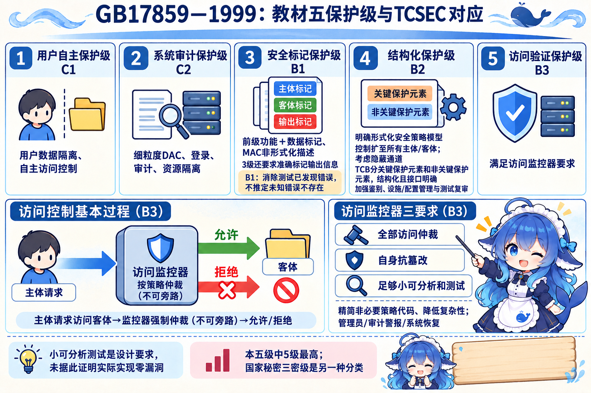
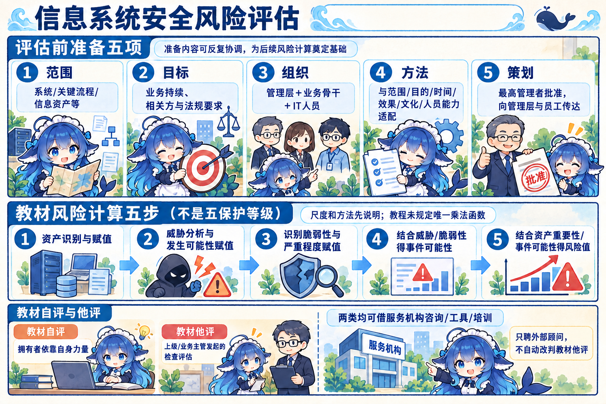
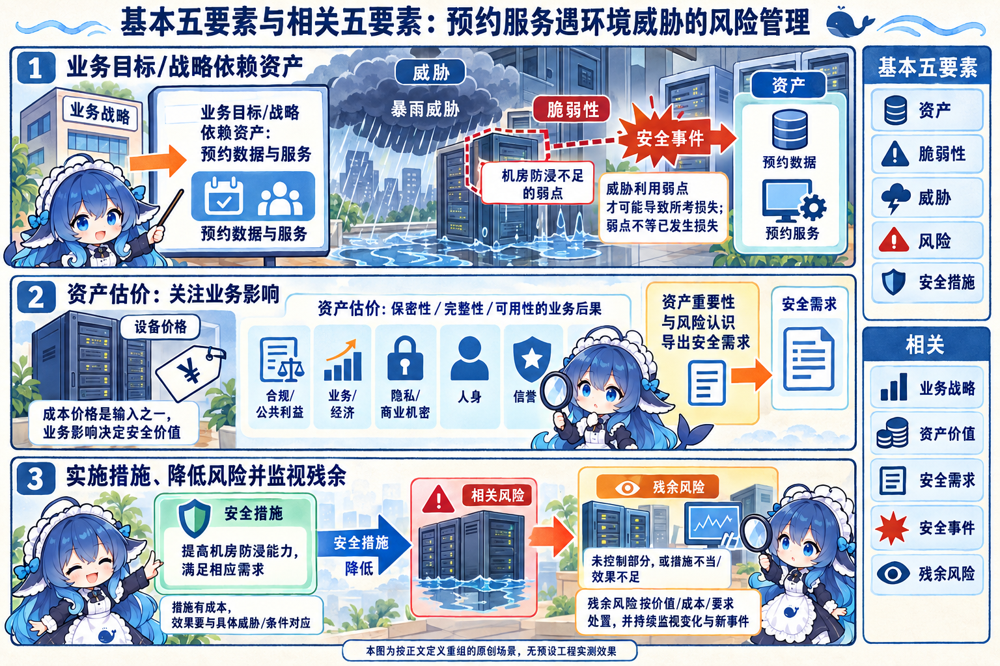
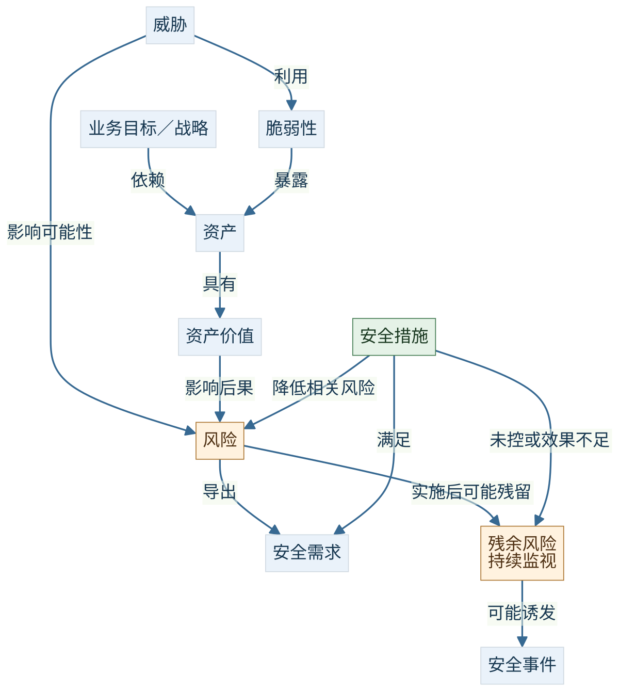
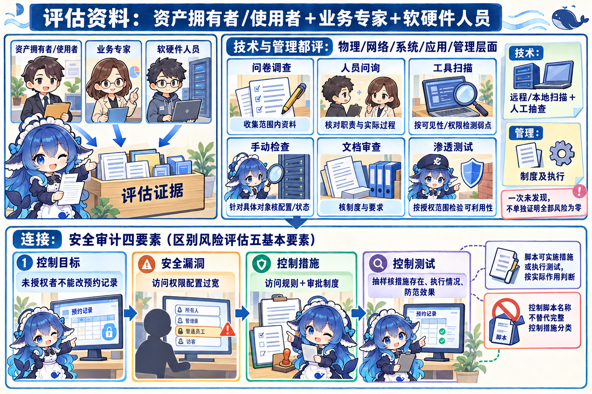
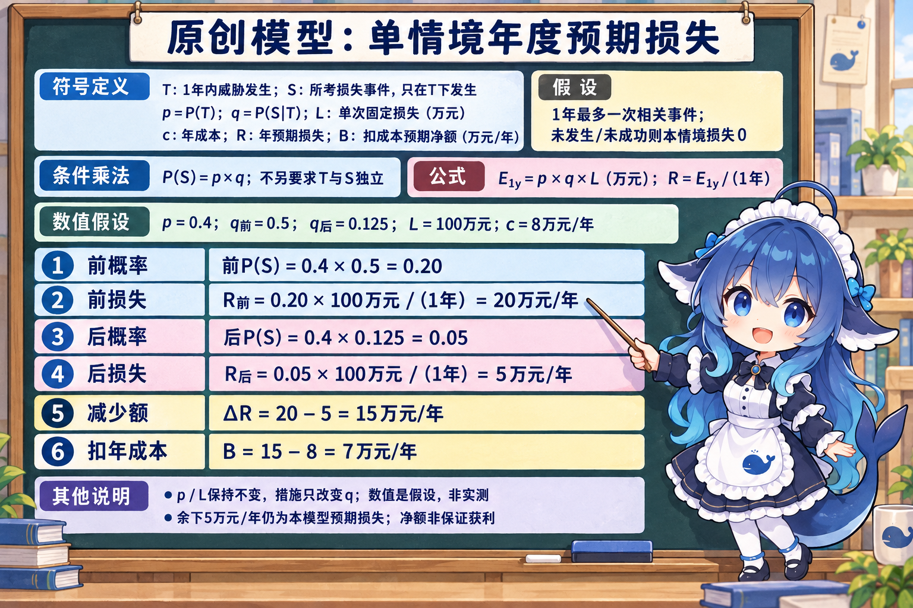
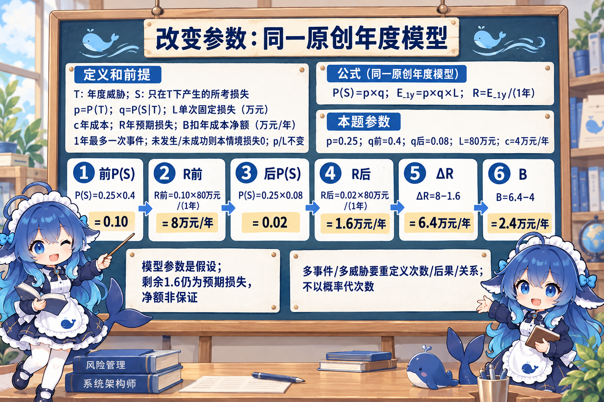
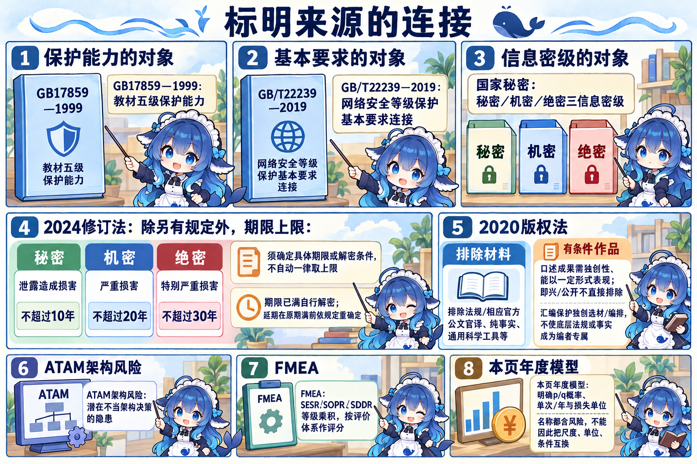
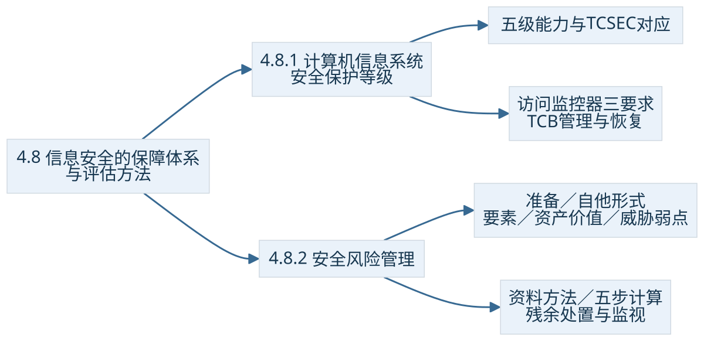

4.8.1 计算机信息系统安全保护等级
预约服务的安全能力可以从权限隔离、审计、标记和策略设计逐层考察。教材采用 GB 17859—1999 的五个保护等级，并给出与 TCSEC 的对应；它讨论可信计算基（TCB）承担安全策略的能力。2026年10月10日实际查询国家标准平台，该标准标为现行；下面保留本教材的名称和机制，不凭某行业名称直接给一个实际项目定级。
| 级别／TCSEC | 正式名称 | 在前层基础上抓住的机制 |
|---|---|---|
| 1／C1 | 用户自主保护级 | 隔离用户与数据，提供自主访问控制，保护用户和组的数据免受非法读写。 |
| 2／C2 | 系统审计保护级 | 更细粒度的自主控制、登录规程、安全事件审计与资源隔离，使行为能追责。 |
| 3／B1 | 安全标记保护级 | 包含前级功能；提供安全策略模型、数据标记与主体对客体强制控制的非形式化描述，并准确标记输出信息；消除通过测试发现的错误。 |
| 4／B2 | 结构化保护级 | 明确的形式化安全策略模型；自主和强制控制扩到所有主体／客体，考虑隐蔽通道；TCB分关键保护元素和非关键保护元素、结构化且接口明确，加强鉴别，支持系统管理员和操作员职能，提供可信设施管理、增强配置管理控制、测试和复审。 |
| 5／B3 | 访问验证保护级 | 满足访问监控器要求，削减实施安全策略不需要的代码、降低复杂性；支持安全管理员、扩充审计警报和系统恢复。 |


访问监控器：每次访问怎样被仲裁
主体请求读取预约记录，客体是这份数据，监控器依据策略给出允许／拒绝。教材要求仲裁主体对客体的全部访问、自身抗篡改、足够小以便分析和测试。若另一个接口能绕过这个仲裁，便不满足完整仲裁要求；只有日志而没有拦住未授权访问，也不能替代访问控制。
“足够小、可分析测试”是设计要求。教材没有据此证明任何实际实现绝对无漏洞；第4级的形式化安全策略模型与第5级的监控器要求也要分别定位。B3/C1等是这里的TCSEC对应，不把国家秘密的三密级或其他标准的级别名称套进这一列。
等级最高的完整原题在本地2024年上半年整理本标为 Q19，解析册另标试题14、另一整理版标21。正文使用已核全文与答案“访问验证保护级”，不把这些号码冒称同一个原卷号。章练另用“国防关键部门／依法特殊隔离”作题内对应，来源答案仍为访问验证；这不代替真实项目按相应制度确定保护要求。
4.8.2 安全风险管理
同一预约服务，机房设备的购置价相同，服务中断的业务后果可能不同。信息安全风险关注威胁利用脆弱性，导致安全事件并影响资产。评估既看事件发生的可能性，也看负面影响，对处理、传输、存储的信息及系统的机密性、完整性、可用性等属性作判断。它为安全保障的建设与决策提供依据。
先把评估范围与方法确定下来
教材的准备内容有五项，先明确本次究竟评估整套系统、关键流程还是一组信息资产，以及为什么评估，再组织实施。范围、目标会影响成员与方法，不把一个扫描工具的默认任务当成整个风险评估。
| 准备项 | 预约服务例中的问题 |
|---|---|
| 确定范围 | 整套服务，还是预约流程、数据存储或某项客户知识产权？ |
| 确定目标 | 业务持续、相关方要求、法律法规等要达到什么要求？ |
| 建立组织结构 | 管理层、业务骨干、IT人员如何组成小组，职责是否覆盖范围？ |
| 选择系统性方法 | 方法与范围、目的、时间、效果、组织文化、人员能力、开展程度是否匹配？ |
| 取得批准并传达 | 上述策划由最高管理者批准，向管理层与员工传达。 |
评估的自评估／他评估按教材的发起与实施口径理解：拥有者依靠自身力量评估为自评估；上级或业务主管机关发起、依据法规或标准、带检查意味的评估称他评估。二者都可借助风险评估服务机构的咨询、工具或培训。拥有者请顾问协助，不足以仅凭“有外部人员”就改判为教材的他评估。


把五要素与相关属性放回同一场景
| 基本要素 | 本例／判断 |
|---|---|
| 资产 | 预约信息、系统、软件、网络等支撑业务的对象。 |
| 威胁 | 人为有意／无意或环境因素，可能造成泄露、篡改、中断等。 |
| 脆弱性 | 物理、配置、代码、人员、过程或管理中的可被利用弱点。 |
| 风险 | 结合相关事件的可能性与对资产的负面影响。 |
| 安全措施 | 满足安全需求、减少相关风险的技术、配置或管理安排，有成本。 |
相关属性还有业务战略、资产价值、安全需求、安全事件、残余风险。业务依赖资产；资产重要性与风险认识导出安全需求；措施满足需求并降低相关风险。措施实施后仍可能保留未控制的部分，或因措施不当、无效产生残余风险。是否接受要结合成本、业务价值与约束，并持续监视环境变化。




图4-11的原图实际是安全措施→降低→风险，Markdown图示转录的箭头方向写反，本册按原图及完整正文纠正。原图顶框写“业务数据”，正文讲“业务战略”；新图按正文重组为业务目标／战略，不声称逐字复制原图。新图每条关系按标签理解，不把“措施降低风险”画成“风险降低措施”。
资产赋值：先看业务后果
先识别、恰当分类资产，再建立一致的价值尺度。资产安全价值依据损失带来的业务影响，包含成本但不只按账面价格。保密性、完整性、可用性的不同损失会形成不同控制需求。教材列十一种影响，下面按用途归组，原项仍全部保留。
| 影响组 | 教材原项的归组 |
|---|---|
| 合规与公共利益 | 违反法律／规章制度；对法律实施造成负面影响；违反社会公共准则；危害公共安全。 |
| 业务与经济 | 影响业务执行；破坏业务活动；经济损失。 |
| 信息与人格权益 | 侵犯个人隐私；侵犯商业机密。 |
| 人身 | 造成人身伤害。 |
| 信誉 | 造成信誉、声誉损失。 |
一次小损失还可能因多次事件累积变大。下面的单次年度模型只是教学例，不能省去这里的业务后果分析，也不将所有后果强行压成一种金额。
威胁与脆弱性：条件怎样配对
暴雨是环境威胁，机房缺乏相应防水是脆弱条件。一个资产可受多种威胁，同一威胁也可影响不同资产；威胁未造成后果或未被意识到，仍不能从台账中忽略。识别应结合关键资产的环境与历史事件，不只统计已经成功造成损失的攻击。
脆弱性本身是条件。没有相应威胁发生时，不能仅凭一个弱点就断言已经产生业务损失；仍要记录，随环境变化复评。错误配置或没有正确执行的保护措施也可能成为弱点。教材从技术与管理两方面、物理／网络／系统／应用／管理等层面评估，既看可被利用条件，也看后果严重程度，并清楚说明赋值含义。
方法、资料与证据
资产拥有者／使用者、业务专家、软硬件专业人员提供评估所需资料。问卷调查、人员问询、工具扫描、手动检查、文档审查、渗透测试是教材列的方法，依范围和方法选择结合。技术方面用远程／本地扫描并辅以人工抽查；管理方面检查制度及实际执行。扫描的结果和可见范围在4.7已经说明，单次阴性结果不能直接证明没有全部风险。


教材五步计算：先说明每个值是什么
- 识别信息资产，并对资产赋值。
- 分析威胁，并对发生可能性赋值。
- 识别脆弱性，并对严重程度赋值。
- 根据威胁与脆弱性，计算安全事件发生的可能性。
- 结合资产重要性与事件可能性，得到风险值。
教材给出要素和步骤，没有在此指定唯一乘法公式。实际方法可以采用概率、等级或定性判断，但每个尺度的含义要一致。等级7不是自动等于概率0.7，评分乘积也不会自动变成万元／年。
自编年度损失模型：完整演算
设观察期为1年，只分析一种威胁情境，每年最多一次相关事件；若威胁未发生或未成功造成该事件，则本模型损失为零。T为这一年威胁发生，S为威胁导致所考损失事件；S只在T发生时产生。p=P(T)，q=P(S|T)，L为成功事件造成的固定业务损失（万元），c为措施年成本（万元／年）。数字是假设赋值，没有实测声称。措施仅改变q，p与L保持不变。
原例：p=0.4，q从0.5变0.125，L=100万元，c=8万元/年
措施后仍有5万元／年的本模型预期损失。7万元／年是按假设计算的预期净额，不是保证实际获利或风险归零；是否接受还要看组织目标、相关约束和后果。


改变参数：p=0.25，q从0.4变0.08，L=80万元，c=4万元/年
先算事件可能性、前后损失与净额，再展开


若一年可能多次发生、有多种威胁、L随事件变化，需重新定义次数／分布／后果和相互关系，不能把本例一个年度概率直接当事件次数。这是条件辨析，不强加另一套万能模型。
连接：安全审计要看措施是否执行
完整章练的四要素口径是控制目标、安全漏洞、控制措施、控制测试。要求未授权者不能改预约记录是目标；权限配置过宽是漏洞；访问规则和审批制度是措施；抽样核验规则与执行记录、防范效果是测试。脚本可实施保护或执行测试，按其作用判断；“控制脚本”作为该题第三要素名称，不能覆盖技术、配置与制度等完整的控制措施。
系统安全日志的识别、记录、存储、分析支持审计，仍需按目标与依据评价控制是否存在、是否实际执行、是否有效。此连接与风险评估的五基本要素属于不同分类，不能把四个审计名称替换到资产／威胁／脆弱性模型中，也不编为教材4.8.3。
连接：五保护等级、三密级与版权对象
国家秘密的秘密、机密、绝密是信息密级。按2024年修订《保守国家秘密法》第14、20条，泄露后果分别为损害、严重损害、特别严重损害；除另有规定外，期限分别不超过10、20、30年。具体事项要确定其期限或解密条件，不能因是机密便默认一律定20年。第24条规定期限已满自行解密，延期须在原期限届满前重新确定，并由规定主体决定。这里仅用于原题“除特殊情况外，机密级一般不超过多少年”的20年对应，三密级不等于系统五保护级。
版权章练则分保护对象：法规和相应官方法律性质公文／官译、事实性消息及通用科学工具等属法条列出的排除类别；符合独创性并能以一定形式表现的口述成果可以受保护，不能只因即兴或公开场合就排除。案例资料的独创选择／编排可构成汇编作品，保护选编不使原法规或事实本身变成编者专属。此处依据2020年修正《著作权法》第3、5、15条，连接归档中的完整法规／小说／案例选编／即兴演说四项，不展开成新的教材小节。


连接：架构评估与风险评分各有问题范围
已完整读教务系统web-bank案例的共同条件与三问。其(m)为WAF防应用层攻击，用作安全控制场景；(f)的新加密牵动安全和性能，为权衡点；(i)紧耦合是架构设计隐患。案例的“架构风险”侧重潜在不当架构决策，本节安全风险侧重威胁／弱点／资产后果。名称相近，回答对象分别定位；WAF的部署描述也不能代替对实际防范效果的控制测试。它的等保2.0问题引向GB/T 22239—2019基本要求，该标准名称与本节GB 17859—1999的保护能力等级分别看，原问“即将迎来”保留为旧题语境。
医疗平台web-bank案例可取其最小数据访问、独立处理环节便于审计的设计理由；选型要看给定场景，不将原解析对管道过滤器／虚拟机的比较推广为所有实现的性能、安全排序。两案均未提供个人作答，不生成错误次数。
2013年下半年下午试题三FMEA完整条件给出SESR／SOPR／SDDR三种等级以及SRPN乘积。它是相应评价体系下的评分／排序，不是本册p、q的真实概率，也不是万元／年。把不同指标都叫“风险值”不能省去模型定义。章内著作权、密级与审计等笔记自加编号仅作本页连接。

